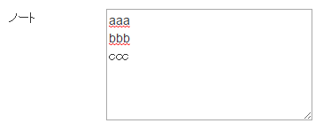

CakePHPのリダイレクト
書き方は2通りある。①リダイレクト先をコントローラとアクションを指定する方法。
$this->redirect(array('controller' => 'animal', 'action' => 'show_list'));
②リダイレクト先のURLを直接記入する方法
$this->redirect('/animal/show_list?id=1');
CakePHP1.3とCakePHP2系のリクエストデータの違いを検証
$this->dataや$this->request->dataの違いがあいまいであったので調査。| CakePHP1.3 | CakePHP2系 | ||
|---|---|---|---|
| コード | ダンプ | コード | ダンプ |
| $this->data | array( 'Neko' => array( 'val1' => '12345', 'text1' => 'いろはにほへと' ) ) |
$this->request->data | array( 'Neko' => array( 'val1' => '12345', 'text1' => 'いろはにほへと' ) ) |
| $this->params['url']['url'] | null |
$this->request->url | 'neko/nobasu/' |
| $this->params['controller']; | 'neko' |
$this->request->controller; | 'neko' |
| $this->action; | 'nobasu' |
$this->request->action; | 'nobasu' |
| $this->params['pass']; | array() |
$this->request->pass; | array() |
| $this->params['named']; | array() |
$this->request->named; | array() |
遷移元URL リファラ | $this->referer()
リンクによる遷移元のURLを取得する方法を３つほど挙げる。ただし3番目は不明。ブラウザに直接URLを入力した場合は、"/"のみが取得される。
①CakePHPの関数
$url=$this->referer()
②PHPの関数
$url = env('HTTP_REFERER');③不明
$url = env('HTTP_X_FORWARDED_HOST');サンプル
テキストエリアと改行コードについて
テキストエリアに改行の入った文字列を入力する。
サブミットボタンを押した後、リクエスト内からテキストエリア内の文字列を取得。 テキストエリア内の文字列は以下のように改行コード「¥r¥n」が入っている。
$note = $this->request->data['RecY']['note'] //$note → aaa\r\nbbb\r\nccc
セキュアなDB保存にするため、SQLインジェクションのサニタイズをかけた場合、改行コード「¥¥r¥¥n」となる。
$note=Sanitize::escape($note);//SQLインジェクションのサニタイズ //$note → aaa\\r\\nbbb\\r\\nccc
DBに保存されるデータ場合、以下が保存される。(phpMyAdminで確認した場合）
aaa\r\nbbb\r\nccc
次にDBから取得場合。
aaa\\r\\nbbb\\r\\nccc
何もせずにHTML側に出力すると改行コードまで見えてしまう上に改行されていない。※¥はバックスラッシュになって表示される。
aaa\r\nbbb\r\nccc
そのためHTMLとして出力する場合、サニタイズされた改行コードを<br>に置換すること。
$note=str_replace('\\r\\n', '<br>', $note);
テキストエリアに再表示させる場合、サニタイズされた改行コードを「 」に置換すること。
またヘルパーでテキストエリアを生成している場合、「'escape'=>false」を設定すること
<?php
$note=str_replace('\\r\\n', ' ', $note);//サニタイズされた改行コードを「 」に置換
echo $this->Form->input('str', array(
'value' => $note,
'type' => 'textarea',
'placeholder' => '-- サンプル --',
'label' => false,
'div'=>false,
'escape'=>false
));
?>
「nl2br()」という関数もある。¥r¥nを<br>に置換することができる。
ただしサニタイズされた改行コード「¥¥r¥¥n」には効かないので注意。
サブミットボタンを配列として管理
方法1
ソースコード(test.ctp)
echo $this->Form->submit('サブミットA1',array('name'=>'test.0'));
echo $this->Form->submit('サブミットA2',array('name'=>'test.1'));
サブミットA1のリクエストの中身
サブミットA2のリクエストの中身
array(
'test_0' => 'サブミットA1'
)
サブミットA2のリクエストの中身
array(
'test_1' => 'サブミットA2'
)
キーがtest_0,test_1などのように「 _ 」で綴られている。
配列に近い形なので、コントローラ内でループによるサブミット判定に使える。
ひと手間かかりそうだが、これなら何とかサブミットボタンを配列として管理できるだろう。
配列に近い形なので、コントローラ内でループによるサブミット判定に使える。
ひと手間かかりそうだが、これなら何とかサブミットボタンを配列として管理できるだろう。
方法2
ソースコード(test.ctp)
echo $this->Form->submit('サブミットB1',array('name'=>'test[0]'));
echo $this->Form->submit('サブミットB2',array('name'=>'test[1]'));
サブミットB1のリクエストの中身
サブミットB2のリクエストの中身
array(
'test' => array(
(int) 0 => 'サブミットB1'
)
)
サブミットB2のリクエストの中身
array(
'test' => array(
(int) 1 => 'サブミットB2'
)
)
サブミットボタンは「test」キーに配列がセットされている。
配列の要素を見るとサブミットB1,サブミットB2のキーはそれぞれ 0 , 1 となっている。
配列要素のキーを見れば、サブミットボタンを配列として管理できる。
配列の要素を見るとサブミットB1,サブミットB2のキーはそれぞれ 0 , 1 となっている。
配列要素のキーを見れば、サブミットボタンを配列として管理できる。
Cakemailのメールテンプレートをテストでプレビュー表示したい
メールテンプレートは通常「app/View/Emails/text/xxx.ctp」のように配置している。メールテンプレートを利用して作成されたメール文を確認したい場合、実際に送信されたメールの内容を見ることになる。
しかしローカル環境（開発環境）では実際にメール送信できないことが多い。
そのためメール送信せずにメールテンプレートで生成されたメール文を確認する方法が必要になる。
メールテンプレートは通常のctpファイルと基本は同じであるため、通常のctpと同じように表示できる。
以下のコードをコントローラのアクションの末尾に追加。
メールテンプレート(app/View/Emails/text/xxx.ctp)をプレビュー表示する場合
$this->render('../Emails/text/xxx');
データの受け渡しは普通のビューと同じように$this->set(...)で。ただし、裏ワザ的なやり方なので、ローカル環境でしか動かないかもしれない。（sakuraサーバーにアップしたらダメだった）
ビュー用便利ヘルパー | エンティティ内の値をいろいろ加工して出力
<?php
App::uses('Helper', 'View');
class AppHelper extends Helper {
/**
* エンティティ内の値をタイプに合わせて加工して表示。
*
* @param $ent エンティティ
* @param $key エンティティのキー
* @param $type 0(省略):空対応のみ 1:XSSサニタイズ 2:金額表記 3:有無フラグ用 4:改行文字対応 5:長文字用 6:テキストエリア用
* @param $option:オプションデータ $typeの値によって意味が変わる
* @return 値
*/
public function ent_show_x($ent,$key,$type=null,$option=array()){
$v = ( !empty($ent[$key]) ) ? $ent[$key] : null;
if(!empty($option)){
$v = ( !empty($option[$v]) ) ? $option[$v] : null;
}
switch ($type) {
case null:
break;
case 1://サニタイズ
$v=h($v);
break;
case 2://金額表記
$v= '¥'.number_format($v);
break;
case 3://有無フラグ
if($v==0){
$v="<span style='color:#23d6e4;'>有効</span>";
}elseif($ent['delete_flg']==1){
$v="<span style='color:#b4b4b4;'>無効</span>";
}
break;
case 4://改行対応
if(empty($v)){break;}
$v= str_replace('\\r\\n', '<br>', h($v));
$v= str_replace('\\n', '<br>', $v);
$v= str_replace('\\', '', $v);
break;
case 5://長文字用。テキストエリアなど長文字を指定文字数分表示。
if(empty($v)){break;}
$strLen=20;//表示文字数
if(!empty($option)){
$strLen=$option;
}
$v=mb_strimwidth($v, 0, $strLen, "...");
$v= str_replace('\\r\\n', ' ', h($v));
$v= str_replace('\\n', ' ', $v);
$v= str_replace('\\', '', $v);
break;
case 6://テキストエリア用（改行対応）
if(empty($v)){break;}
$v=str_replace('\\r\\n', ' ', h($ent['note']));//サニタイズされた改行コードを「 」に置換
$v= str_replace('\\', '', $v);
break;
default:
break;
}
return $v;
}
}
使用例:ctpファイル内
echo $this->Html->ent_show_x($ent,'id');//空でも警告がでない。 echo $this->Html->ent_show_x($ent,'shop_id',0,$shopNames);//マッピングデータに紐づく値を表示 echo $this->Html->ent_show_x($ent,'text1',1);//XSSサニタイズ echo $this->Html->ent_show_x($ent,'billing_amount',2);//金額表記 echo $this->Html->ent_show_x($ent,'flg',3);//有無フラグ用 echo $this->Html->ent_show_x($ent,'note',4);//テキストエリア用（改行に対応）
チェックボックスの配列から値を取得
ビュー：チェックボックスの配列を作成する。
<?php
for($i=0;$i<4;$i++){
//チェックボックス
echo $this->Form->input("StatusIds.{$i}"//フォーム名＋インデックス（連番）
,array(
'type'=>'checkbox',
'value' => 1,//←チェックが入っている1が送信され、入っていない場合は0が送信される。
'checked'=>true,//←初期のチェックはここで設定
'label'=>'TEST'.$i,//←ラベル名
'div'=>false,
'style'=>'margin-left:15px;',
)
);
}
?>
コントローラ：取得結果をダンプしてみる
public function index() {
Debugger::dump($this->request->data);
}
ダンプ
array( 'StatusIds' => array( (int) 0 => '1',//チェックが入っている場合は1 (int) 1 => '0',//チェックが入っていない場合は0 (int) 2 => '0', (int) 3 => '1' ), //...略 )
モデルクラスファイルなしでモデルのインスタンスを取得：ClassRegistry::init();
モデルクラスファイルがなくても、モデルのインスタンスを取得できる。ただしモデルに関連するテーブルは必要である。
下記の例ではAnimal.phpファイルは未作成だが、DBにanimalsテーブルが存在する場合に有効である。
$this->Animal=ClassRegistry::init('Animal');
Animal.php（モデル）ファイルを作成していても利用できる。内部的にシングルトンパターン（GOFデザインパターンの１つ）を利用しているようであるので、インスタンスは1つに保たれ無駄がない。